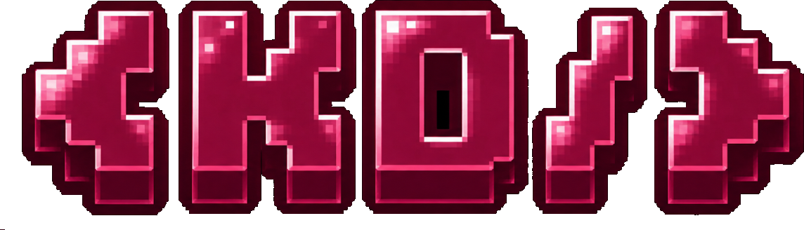

01
LEARN
Explore web development, cybersecurity, AI and other technology pathways.
A women-focused tech community to learn, build, connect and grow through practical activities and shared experiences.
HerStacks connects women exploring technology through learning, hands-on challenges and community collaboration.
Explore web development, cybersecurity, AI and other technology pathways.
Put your knowledge into practice through projects, activities and challenges.
Meet other women in tech, share ideas and support each other's progress.
Discover community activities or manage your member account. Both portals are part of the HerStacks experience.
Browse published activities, check available XP rewards, and submit your work when submissions are enabled.
OPEN ACTIVITIES →Create an account, sign in, update your profile, and review your participation history when your account is connected.
OPEN MY ACCOUNT →Try help to explore the community, activities and member portal.
HerStacks WhatsApp Community is ready. Join to hear about upcoming sessions, discussions and opportunities.
Community announcements, peer discussions and event updates.
Explore available activities, connect with members, and follow the official guilds for new opportunities.
VIEW ACTIVITIES →Explore the official KrackedDev HerStacks and HerOps guilds.
A community for women learning and building in technology, including web development, AI and digital innovation.
OPEN HERSTACKS GUILD ↗Discover cybersecurity learning, ethical hacking concepts, labs and beginner-friendly challenges.
OPEN HEROPS GUILD ↗
HerOps is the cybersecurity-focused pathway for HerStacks members interested in security learning and hands-on practice.
OPEN HEROPS GUILD ↗Everything you need to get started with the HerStacks community.
Join the WhatsApp Community or visit the official HerStacks guild page. You can also create a member account through the Account page.
Open the Activities page to browse published challenges and community tasks.
Activities may award XP after a submission has been reviewed and approved. XP cannot be self-awarded by members.
HerOps is the cybersecurity learning pathway connected to the HerStacks community.